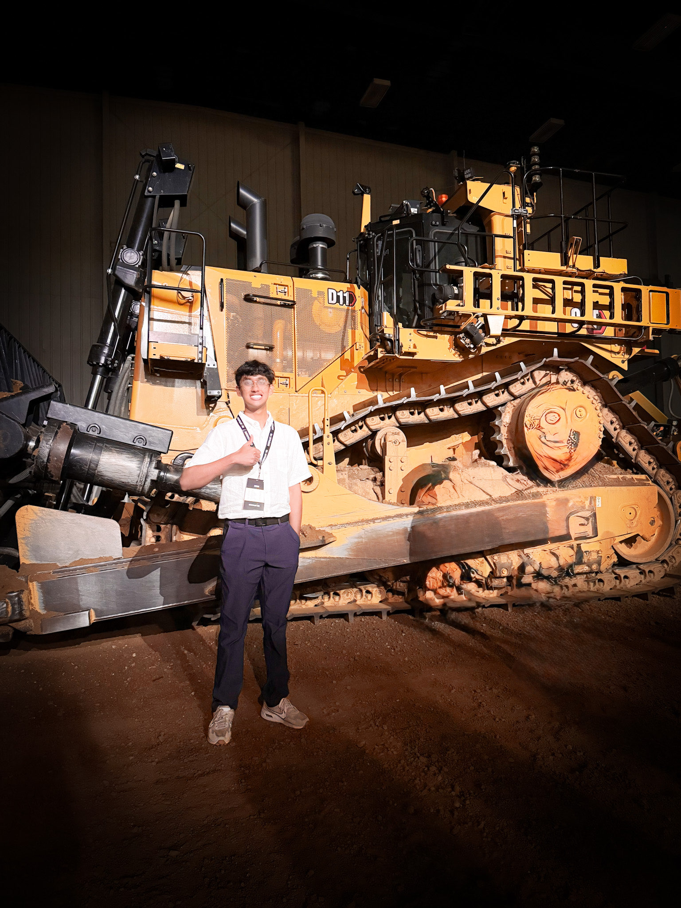
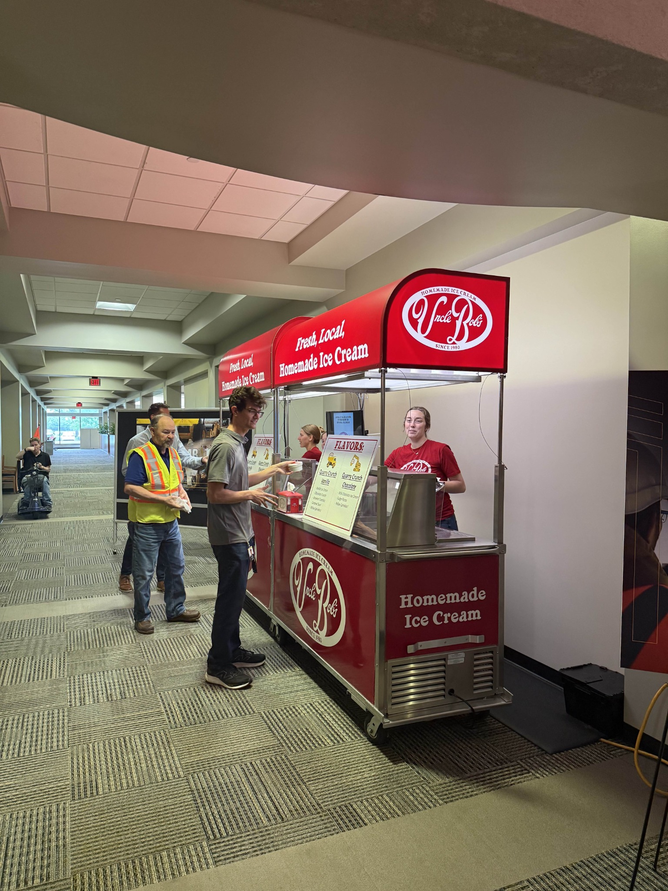

Embedded Controls Co-Op
Caterpillar Inc., Technology Division • Aug 2025 – Present
After completing my simulations internship, I transitioned to the
Technology Division. Here I architect situational speed target generators
and wheel-level control logic for traction control on Caterpillar's heavy machinery.
Highlights
-
Architected situational speed target generators and wheel-level
control logic for traction control in Simulink, tuning gains
through closed-loop simulation before deployment.
-
Developed multi-rate integration approach for vehicle sensing
(IMU + wheel speed sensors) targeting ECM/ECU deployment; generated
embedded C from Simulink models.
-
Validated and tuned traction speed estimation and control using
Dynasty plant testing; reduced oscillations and improved system
stability.
-
Collaborated with cross-disciplinary teams to refine requirements
and documented processes so future engineers can quickly build on our
work.
Skills & Tools
- Model-Based Design (Simulink, Stateflow)
- Embedded C programming & code generation
- HIL testing & data acquisition
- CAN bus & sensor integration


← Back to Experience overview